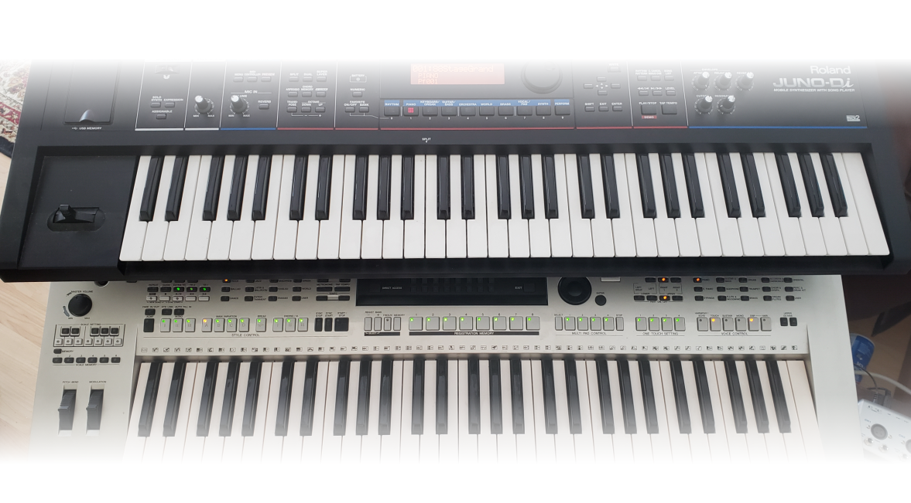
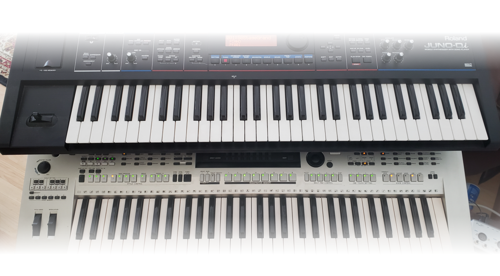

Performances
Public Performances Presented by Gamak
To promote interest in North Indian Classical music, Gamak Academy actively encourages its students to participate in public performances through the institute. This also helps its students keep motivated and take extra efforts to attain skills. Students from the academy have presented many shows at the local temples, interfaith groups, and community organizations. Some pictures/clips of these performances can be viewed under the tab ‘Performances/By Institute’ or click at the above link.
Annual Recitals
The institute holds two annual recitals each year. One for the younger students and one for the adult students. Students are encouraged to participate in these annual recitals where they perform a solo classical presentation of their choice. These annual solo performances boost the confidence of the students. The annual recitals are open to public. The annual recital for the adult students always concludes with a special presentation by Mrinalini. Some pictures/clips of these performances can be viewed under the tab ‘Performances/Annual Recitals’ or click at the above link.
Kalavandan
‘Kalavandan’ are the special presentations by the students of the Gamak Institute. This is a debut performance of Indian Classical Music for the advanced students. Students who wish to present the ‘Kalavandan’, are required to present a classical concert for over one hour, open to the public. Not only are they required to present different forms of classical music, like “Tarana”, “Thumari”, etc., but it is also an absolute requirement that the student presents at least one “khayal”, with “Vilambeet” rhythm, “layakari’, etc. The institute awards a plaque at the end of the performance to acknowledge the success of its student. These performances are open to the public, and we encourage you all to attend these performances. Some pictures/clips of these performances can be viewed under the tab ‘Performances/Kalavandan’ or click at the above link.